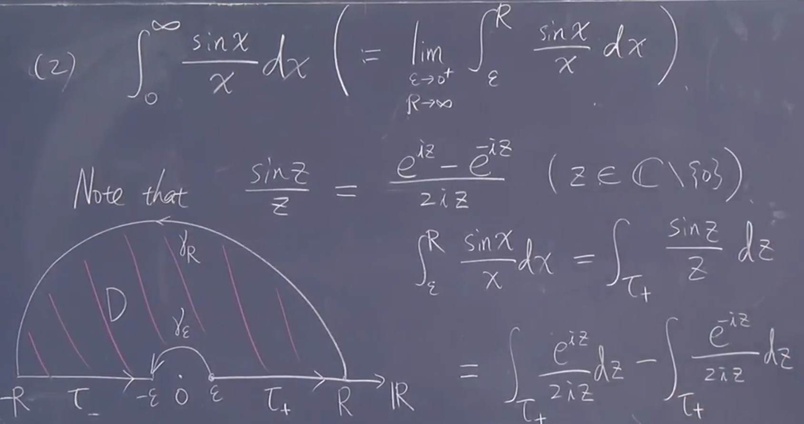
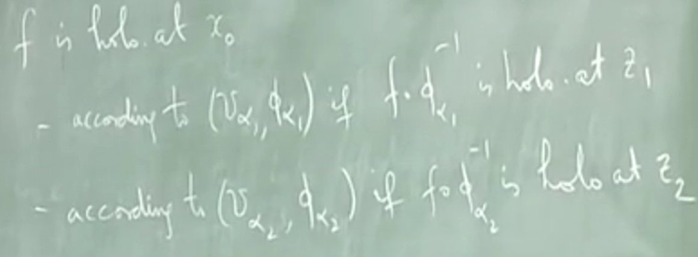
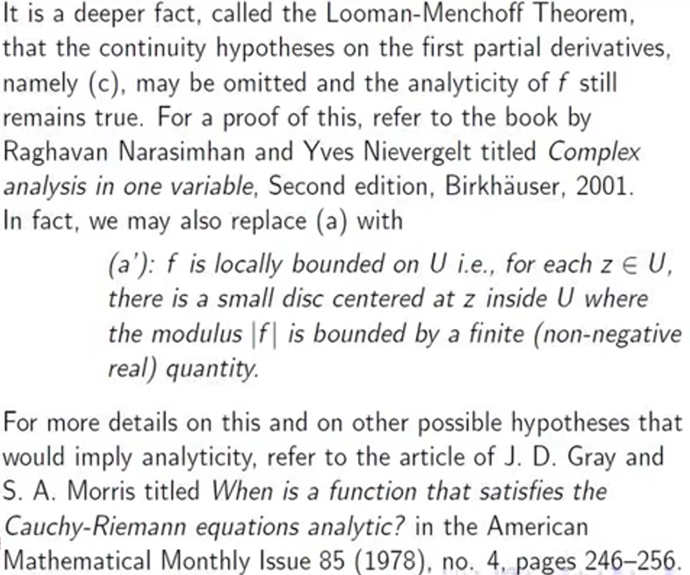

复分析笔记*|
Table of Contents
1. 资源缘起简介
被同学介绍去听讲黎曼面的复分析选讲，这里看几门课预热一下。
笔记关注基本的定理性质，和黎曼面有关的内容。主要记录形式是抄板书和评点。
印度的课很不错
2. 复分析简介－齐震宇
特点快速看到结果
2.1. 1
定义可微
全纯的定义：区间可微，导数连续
一阶逼近－链式法则
复平面和二维空间同构，可以建立双射，可微等价于二维平面可微和 RC 条件
解释 RC 条件：其实是 Jacobi 矩阵
不可微函数举例： \(\overline{z}\)
复数可微也是线性的， \(z\) 是全纯的，多项式都是
考虑级数，在在收敛半径内，它是否存在微分的极限（问可微）
比较距离
m test 可知收敛
得到微分后级数一致收敛到连续函数
(上面应当是从1开始)
所以微分后有收敛结果
一些常见基本函数结果与实数一样而且全平面全纯（整函数） 注意到上面指数函数相当于周期是 \(2\pi \mathrm{i}\)
- 在复数上沿着曲线路径积分
定义曲线 \(I\supset[a,b]\) 积分本身是 \(\mathbb{C}\rightarrow \overline{C}\)
展开线积分
\(\int f |\mathrm{d}z|\) 表示对弧长积分
利用三角不等式说明积分不等式：
类比线积分 Green 定理～ Cauchy 积分定理 这里是把所有边界加起来，可以把多个加起来
Green domain 表示 Green 成立的区域 这可以直接 加上 RC 得到。 有很多计算上的应用。
线的合成是成立的
2.2. 2
之前是作为 Green 定理的推论 二维线性积分
一个椭圆，可以容易参数化，希望沿着 \(\gamma\) 线积分 例子：瑕积分 
 于是就是
于是就是
(1): 这里 \(\mathrm{e}^{-R\sin\theta}\) 无法计算
(2)
 \(\pi\) 后面 \(\mathrm{i} \rightarrow 0\)
f 一定有界，有界乘以小量
\(\pi\) 后面 \(\mathrm{i} \rightarrow 0\)
f 一定有界，有界乘以小量

例子 在实数上会积分，但现在多一个 \(\mathrm{i}\) 于是开平方
现在取 \(\sigma_{R}\) 方向做积分，原来是横着积分圆半径积分。 ?没懂思路什么意思 遇到指数积分看实部即可（虚部只旋转）
结论： 两者相等
纠错：
体验总结：改变路径，取极限。没有统一的方法，但某一类函数是相似的
2.2.1. 傅里叶变换计算案例
2.2.2. Cauchy 积分公式
全纯函数的特性。
积分公式：一个结果用积分表达出来
把它用这样复杂写出来的功能是什么，积分的性质非常好，它可微；积分估计比微分简单（三角不等式）；甚至可以写出微分形式。
同样也可以算是以后公式的特例
\(\frac{F}{z-a}\) 有了分母不一定全纯，那么就是考虑 a 附近。于是再次用之前定理
和 \(\varepsilon\) 无关有极限，是一个平均值
可以估计这个平均值。 F 连续，只要够近，就可以限制在很小范围内
有机会看？没讲
这给之后非全纯、偏微分方程有启发。
选 a 点，的值和边界积分
2.3. 3
2.3.1. 极大模原理
应用积分定理 连通（可以用连续的参数曲线连起任意的起点末端）的开集
连通区域上面全纯是常值函数。 证明：…
既开又闭证明它就是全集。
2.3.2. 孤立奇点洛朗展开
isolated singularity and
约定定义： 定义域
奇点：
 孤立奇点被定义域包围
孤立奇点被定义域包围
乱写一个例子，非全纯（不满足 CR 条件）
研究靠近孤立奇点的情况
2.3.2.1. Laurent 级数
加 formal 表示不考虑敛散性，形式就是形式没有特定含义。 收敛时指，正指数和负指数部分都收敛。
放宽
找红大一圈，蓝小一圈 \(D\) 是环状区域 annulus 开集减闭集
f 是有定义的，可以使用柯西积分公式。 特殊区域上考虑边界积分，分成内外两部分。
古典的方法？
I: 绝对值小于1,变成几何级数； …想象做参数化，？看出，原因连续有界函数
II:
分母分子倒过来。之前证明关键凑出几何级数，比一小
 看起来像 Laurent 级数。注意到和 w 无关。只有在 c 出问题。红色只有在大圈内就成立。
完全被 c 决定
看起来像 Laurent 级数。注意到和 w 无关。只有在 c 出问题。红色只有在大圈内就成立。
完全被 c 决定
统一；故意阻隔。如果在 c 有定义，第二项不存在，柯西积分定理得到0
幂级数中间小于某个部分
如果只知道对一个点收敛能知道
在孤立奇点附近可以把函数写成收敛 Laurent 级数形式
引入定义：将负一次系数叫留数
Laurent 级数形式具有唯一性：
证明： 收敛，因此在整个圆盘上收敛 均匀收敛 将它们变成负一
更一般：
积分结果是中心点的留数
加上边界点就有界闭于是紧 红色是去掉的没有定义的部分
沿着正定向。不是红点没有项是0. 红点有限多
证明概要：每个奇点选圆盘，可以互斥（有限），绕D 边界，合在一起，在白色全纯 存在互不相交的圆盘，对一起使用柯西积分定理
似乎是在格林区域上考虑问题，有更简单的积分方法。
不要未战先败
2.4. 4 孤立奇点分类
复习：孤立奇点的洛朗展开，现在把 z 当作变量
引入重数 定义：最大下界，可能是无限大。 约定
- (多项式叫做根)
- 极点（南北），更小的都是零
- 本性奇点：无限多非零
需要理解这些情况是什么：指的是哪里是0
性质梳理
自然的是否（唯一的）等价 答案：是的。
1没有负的项非零，可以定义值

可去奇点：可以定义（变为全纯） 极点：靠近无限大 本质奇点：可能各种情况－太奇异
3对应既不也不，可以从极限定义出发，思考3的含义。 取一个点列，得到各种情况。可以得到任意值
可以查 Picard great theorom. 本质奇点，它的函数值可以是整个复数平面（最多漏掉一个点 \(\mathrm{e}^{-\frac{1}{z}}\) 没有0）
2.5. 5 极大模原理应用
Schwarz's Lemma: 开圆盘上的全纯函数，从圆盘到圆盘，0到0。 (有保角性，此处不谈相关几何)
它只能是旋转，没有其他可能。
快速证明： 造一个全纯函数，它满足极大模，找最大值。 分析极大值的位置，假设极大值在里面
双射
微分相乘得到1?
2.6. 6. 辐角原理
简单小讨论：用一个构造去研究原函数（和奇点相关）
用对数更方便，显示处着留数体现了原函数的
亚纯：不纯的只有极点
结合留数定理
简单梳理： 微分－全纯 展开幂级数－洛朗级数；可以分析奇点
说 Green 区域时，在说什么。这是可判断得吗
3. 黎曼曲面导论－齐震宇
3.1. 历史发展
复变的观点，继续延伸（到几何和一般的拓扑）。
- Cauchy-Riemann equation
- 早在1752就在 D'Alembert 描述流体（ fluid flow ）出现；
- Euler, Langrange 也在工作中用到。
- 1814， Cauchy 希望在复数上引用微积分（ complex differential）。
- Riemann 则是1847年用这个条件描述了一类特殊函数－全纯函数・
- Intergal representation
Cauchy
- 1825 integral theoren
- 1831 integral formula
Laplace 方程和关联（没听清）
- power series 幂级数
- Cauchy 1821 收敛半径 radius of convergence
- Abel 1826 normal convergence in the disc of convergence radius
Weierstrass 1842 analytic function
黎曼面的发轫
Riemann 1857 Riemann surface, to make 'analytic functions' univalent
解析的含义原来特殊，原来是多值但有全纯特性的函数
3种观点
- Weierstrass 幂级数观点
\(\sum a_n(z-a)^n\) 以 a 为中心（假设）收敛半径 \(r(a)\) 研究范围内一点，可以使用 Talyor 展开
s 点本身可以 Talyor 展开，这个点的收敛范围可能超出原来的。
两者取并集，得到 immediate analytic continuation 直接？延拓
比如说， \(\sqrt{z}\) 在一点绕一圈？
一段线 \(\gamma: [0,1]\rightarrow \mathbb{C}\)
分段，任何一段是原来的直接延拓
以上只是给出一些起源（现在不理解很正常），之后学习可以回想这里的含义
总之，可能从外围绕一圈不一样
- Riemann
在一个平面上，利用上面延拓
所有的集合的并集，看能不能包住另一个点。这相当于是集合论的定义 而可以把这些集合全部练习在一起，？想象成曲面
此时从集合到，需要定义拓扑
另一个看同一个幂级数定义解析函数，可以形成邻域。
这 ????
\(S\rightarrow \mathbb{C}\)
- 1882 Klein compact Riemann surface
- 1908 Koebe general Rs
- 1913 Weyl 现代流形语言定义
elliptic abelian function
椭圆函数： Legrendre,Gauss,Abel,Jacobi,Weiestrass,Riemann（许多研究是为了揭示椭圆函数里面特性） 数学家接力
定义
4. 黎曼曲面与代数曲线
An Introduction to Riemann Surfaces and Algebraic Curves: Complex 1-Tori and Elliptic Curves by Dr. T.E. Venkata Balaji, Department of Mathematics, IIT Madras.
4.1. 黎曼曲面内涵
Ideas of Riemann surface
- Goal: idea & example of Riemann surface
4.1.1. recap
4.1.1.1. recall 1
复函数 \(\omega=f(z)\) 形象上，可以如图表示表示为复平面之间的映射
4.1.1.2. recall 2
复函数特性： 在 \(z_0\) 解析、全纯（两者可互推），有三个等价条件：
- [一般作为定义] 记 \(\omega=u+\mathrm{i}v\) 要求 \(u_x=\frac{\partial u}{\partial x},u_y,v_x,v_y\) 存在 \(\vee\) (邻域内点)满足 Cauchy-Riemann 条件，即 \(\forall z \in B(z_0),u_x=v_y,u_y=-v_x\)
- 邻域内可导： \(\forall z\in B(z_0),\exists\lim_{\Delta z \rightarrow 0}\frac{f(z+\Delta z)-f(z)}{\Delta z}\)
- 有幂级数表示： \(\forall z\in B(z_0),\exists \sum a_n(z-z_0)^n\rightarrow f(z),n\geq 0\)
1 与 2 联系：
\begin{equation} \label{eq:1} \frac{\mathrm{d}f}{\mathrm{d}z }=\frac{\partial f}{\partial x}=u_x+\mathrm{i}v_x \end{equation}一阶可导推出无穷可导（多项式） 数列通项： \(a_n=\frac{f^{(n)}(z_0)}{L^n}\) \(f^{(n)}(z)=\frac{\mathrm{d}^nf}{\mathrm{d}z^n}\)
也就是上面的幂级数 \(\sum a_n(z-z_0)^n\) 就是（ \(z_0\) 附近的） Talyor 展开
4.1.1.3. recall 3
injection holomorphic map is a holomorphic isomorphism 换言之，若 f 是全纯单射，可得 \(f(v)\) 是开集且 \(f^{-1}:f(v)\mapsto v\) 全纯。
全纯+单射得到同构（域的同构是保持加法和乘法的双射）。
4.1.2. idea
从像球、环、柱面，可以想象 start with a surface, say just like the sphere or tortus or eqduides that can visualise in \(\mathbb{R}^3\)
上面都可以作（开？）圆盘
有映射 \(D\overset{f}{\rightarrow}\mathbb{C}\) ，现在希望定义 We want to "define" when f is holomorphic at \(x_0\). One way to do it is to topologically identify D with open subset, say the unit? set
\(\Delta=\left\{ z\in \mathbb{C}\mid \left| z \right| <1\right\}\)
by choosing a holo. \(\phi:D\rightarrow \Delta\) 并要求 \(f\circ\phi^{-1}\) 在 \(\phi(x_0)\) 全纯
without any arbuarty 希望像在平面上一样定义映射。 Riemann 曲面的设想是用在其它平面上使用复分析
D 相当于一个邻域（complex chart）
In the same way, we say that f is holo. in D if \(f\circ\phi^{-1}\) is holo. on \(\Delta\) . The pair \((D,\Delta)\) is called a complex cordinate chart. 同样，…，将对称作复坐标图册？
给了坐标，于是相当于 \(\Delta\rightarrow \mathbb{C}\) ，直观上就是球面上一个开区域？直接到复数域
More genrally, a complex chart is a pair \((V,)\) where V is an ioen subset of X, \(\phi\) is a holo. if 更一般
这就是图册。一种把曲面变成平面复函数的思路。而这是在 R 上面做，于是是时候给定义了。
4.1.3. preliminary definition
任意的黎曼平面上的点都在一个图册里面，这样就可以做分析了（ this is a working definition）
Def: A surface covered by a collection of charts \(\left\{ V_{\alpha},\phi_{\alpha} |\alpha\in I\right\}(X=\bigcup V_{\alpha})\)
但可能一点在多个图册里面（想到了多值函数），这是需要考虑的
But we into pr follow? Suppose \(V_{\alpha_1}\) and V ? certain the point

严格写出： 
得到两个有定义的结果。那么也可能有无穷多的，应当不依赖于取的情况，因为全纯应该是内在属性。
于是有以下要求，对于相交部分 \(U\cap U\) 相交部分在不同图册有全纯映射
\(g_{12}=(\phi_{\alpha|u_1\cap u_2})\circ(\phi_{\alpha_2|V_{\alpha_{21}}}):V_{21}\rightarrow V_{\alpha_{12}}\)
于是这使得 g 称为同构
cocrete defe
将转移函数（映射） \(g_{12}\)
给我们一个曲面到复平面的映射。 上述论述像是为了严格化（防止两个不同）
4.1.4. 笔记习题

4.2. 黎曼曲面简例
Simple example of Riemann surfaces 目标
- 实平面如何与复平面结合
- 实2维球和复平面结合
4.2.1. 复习
利用复数分析处理曲面问题
X 上具有以下结构被称为黎曼曲面： 有 X 上的图册 \(\left\{ (U_{\alpha},\phi_{\alpha}|\alpha\in I) \right\}\) 满足下面三个条件：
- \(U_{\alpha}\) 覆盖 X
- \(\phi_{\alpha}:U_{\alpha}\rightarrow \mathbb{C}\) 是同胚映射， 将 \(U_{\alpha}\) 送到 \(\mathbb{C}\) 上的开子集 \(V_{\alpha}\)
- 对于任意相交部分 \(U_{\alpha}\cap U_{\beta}\) , \((U_{\alpha},\phi_{\alpha}),(U_{\beta},\phi_{\beta})\) 相容（compatiable）
is unambiguous
相容此处表示：
- 转移映射 \(g\) 全纯 \(\Rightarrow g^{-1}_{\alpha\beta}=g_{\beta\alpha}\)
4.2.2. 地图册 atlas
将相容的图册称为地图册 (complex) atlas. 之后的工作就是找地图册。
对于抽象的曲面，自然黎曼曲面也要在抽象上定义，目前先讨论2D
4.2.3. \(X=\mathbb{R}^2\)
使用地图册 \(U=X,\phi:U\rightarrow \mathbb{C} \quad (x,y)\mapsto x+\mathrm{i}y\) 此处不需要检查相容性。黎曼曲面自动成立，它就是复平面（平面）
hence the complex plane is a Riemann surface structure on \(\mathbb{R}^2\) by the standard identification of \(\mathbb{R}^2\) with \(\mathbb{C}\)
4.2.4. 改变映射
\(\phi:(x,y)\mapsto \frac{z}{1+|z|}\)
此时 \(\phi\) 的值域是单位圆的子集，甚至可以写出逆 \(\phi^{-1}:\Delta\rightarrow U \quad (x,y)\mapsto \frac{z}{1-|z|}\)
于是 \(\phi\) 是 \(\mathbb{R}^2\rightarrow \Delta\) 的同胚
4.2.5. 定理
任何单连通非紧黎曼曲面与单位元或复平面同构
证明较为深奥。之后会给处正确结构的感觉。
没有洞、有界闭。
这个定理事实上说明不存在其它的映射做出复数平面上（？好的）黎曼曲面
4.2.6. 例三球面
将 \(\mathbb{S}^2\) 赋予黎曼曲面结构 Making into a RS
?球极投影
放在三维空间中，定义南北极为 S,N , 地图册是两个元素 \(\left\{ (U_1:=\mathbb{S}/N,\phi_1),(U_2:=\mathbb{S}^2/S,\phi_2) \right\}\) , \(\phi\) 都是 stero. 投影
检查相容性， \(\cap=S^2/\left\{ N,S \right\}\) 两者一样 \(\mathbb{C}/\{0\}\)
检查转移函数是 \(g=z\mapsto \frac{1}{z}\) 是全纯（多项式？）
此称为黎曼球。
那么能不能再给出一种，比如映到单位圆。
定理：任何单连通紧黎曼面和黎曼圆同构。
don't have any freedom
4.2.7. 笔记习题
4.3. 最大地图册与黎曼面全纯映射
目标：等价地图册定义黎曼曲面；黎曼曲面之间的全纯或同构映射
之前翻译不好，以下 chart 一律作图卡（不用三个字的坐标卡与 atlas 图册（也不用三个字）呼应）
4.3.1. 复习
从实曲面出发：想在上面复分析，进一步的分析全纯函数等－于是使用图册覆盖曲面。 之后希望保证定义在上面的函数全纯性质是内在（不变的），这是就要求图卡（paiswise?）相容， 这就意味着相交图卡中的转移函数 \(g_{ab}=\phi_a\circ\phi_b^{-1}\) 全纯
相容的图卡就称为图册。 X 和其上的地图册组成黎曼曲面结构。
见到过 \(\mathbb{R}^2,\mathbb{S}^2\) 上的黎曼曲面 \(\{(R^2,\phi_{\alpha})|\phi:\mathbb{R}^2\rightarrow \mathbb{C} \quad (x,y)\mapsto x+\mathrm{i}y\}\)
4.3.2. 等价性定义
也可以给出 \(\{(U,\phi_U)|U\overset{\text{open}}{\subset} \mathbb{R}^2\}\) 它与上面的应当是同一个
就此找 等价性 。 定义两个图册等价：若每个图卡与另一个图册每个图卡相容。 >解决了部分和整体的问题，可以进一步让黎曼曲面有特殊唯一性。
这样，等价的图册并仍然是图册。利用 Zorn 引理（选择？）可证：
定理：给定图册，有唯一最大图册包含它。
?上界… 对了有的称极大图册都可吧
总之，这样讨论时更方便，将之前两个集合当作同一个讨论。
再定义黎曼曲面：实曲面上最大图册。
4.3.3. 同构
uns?定理：连通不紧黎曼曲面同构于复平面或单位圆（可能上半球）。
\(\mathbb{R}^2\rightarrow \mathbb{C}\)
定理：单连通紧黎曼面与黎曼球同构
因此所有曲面到球的都是相互同构（球之间同构）
不过，这里的同构需要准确说明： 黎曼面 X,Y,映射 \(f:U\rightarrow V,U\overset{\text{open}}{\subset} X\, V\overset{\text{open}}{\subset} Y\)
反复套映射
说
5. 未整理
从实数推广的视角| 抽象代数出发描述： 主理想
取极限的难度在于复数没有（在运算下合理）序
证明极限的特例： \((1+\frac{z}{n})^n\)
i. z 实数
ii. z 纯虚数
iii. 幂性质 \(f(a+b)=f(a)f(b)\)
拓扑概念： 拓扑就是建立在一般的开与闭基础之上，拓扑空间就是一个在集合上指定了开集。
这里直接使用度量建立拓扑（划分开闭） 绝对值 开集 紧集
6. 复分析选讲－课
从感受到思路是:我们为了在复数上的多值函数单值化，于是将值域进行划分，使得每个值域点仅仅落在一个特定的区域。这是可以（拓扑）几何上把复平面重新连接起来，得到一个新的曲面，RS.
之后反过来（黎曼曲面多有意思）给一个曲面看如何在上面定义函数（是合适的）
研究函数生成的黎曼面案例
- log
- e
- \(\sqrt{p(z)}\)
接下来是
2 branches
发现如何构造